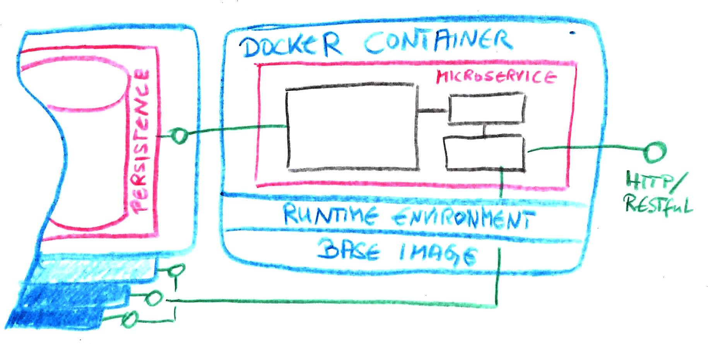

Schlank in den Service:
Der große Java-
Microframework-Test!


Microservice Architektur
Microframeworks
„Elegante, flexible auf ein Thema fokussierte Rahmenwerke für eine Problemstellung (in der Regel Webanwendungen) mit dem Ziel einer schlankere Source- und/oder Bytecode-Linie“Die Kandidaten
Eleganter Zündfunken
Datenblatt
Sinatra-inspiriert
Minimaler Boilerplate
Ausdrucksstärke
Standalone (Jetty 9)
Java 8 & Kotlin
zusätzliche Spark-DSL unter Kotlin
2.7.1 (Nov. 2017), APL2
http://sparkjava.com/
Quick-Start #1 build.gradle
apply plugin: 'java'
apply plugin: 'application'
repositories {
jcenter()
}
dependencies {
mainClassName = 'bentolor.sparkjava.HelloWorld'
compile 'com.sparkjava:spark-core:2.3'
}Quick-Start #2 build.gradle
package bentolor.sparkjava;
import static spark.Spark.*;
public class HelloWorld {
public static void main(String[] args) {
get("/hello", "text/plain", (req, res) -> "Hello World!");
get("/greet/:name", "text/plain",
(req, res) -> "Hello "+req.params("name")+"!");
}
}Spion mit Konventionen
Datenblatt
CoC
MVC
Stateless
Full-Stack
Hibernate, Guice, Jackson,
Flyway, Ehcache, …
Daher nicht wirklich „Micro“
6.2.2 (Jan. 2018), APL2
http://www.ninjaframework.org/

Convention-over-Configuration (CoC)
← Immer: controllers
← Guice Dependency Injection
← Immer: Result
← /GroceryListController/index.ftl.html
← Request Body
geparsed via Content-Type
← URL Parameter

Datenblatt
(ex-)Floppy-tauglich (1.44MB)
Baukastensystem
an Mikro-Komponenten:
IoC, AOP, Bean-Validation
SQL/OR-Mapper, HTML Tools,…
Endergebnis: 800kb
3.8.5 (April 2017)
APL2
http://jodd.org/
Datenblatt
Reaktiv & Asynchron
hohe Ähnlichkeit mit Vert.X
Basis: Netty & Promises
Module: Guice, Groovy,
Jackson, Spring Boot
1.4.6 (April 2017)
APL2
https://ratpack.io/
Das Schlachtfeld
##### „Einkaufsliste“ - RESTful CRUD Application - Frontend: `ng-admin` - Backend: Kandidat


Weitere Materialien QR-CODES?
- Pippo (http://www.pippo.ro/)
- Javalite (http://javalite.io/)
- https://github.com/bentolor/
microframeworks-showcase/
To the battleground
ng-admin (1)
var myApp = angular.module('myApp', ['ng-admin']);
myApp.config(['NgAdminConfigurationProvider',
function (NgAdminConfigurationProvider) {
var nga = NgAdminConfigurationProvider;
var admin = nga.application('My Grocery Lists');
var configureFields = function (view) {
return view.fields([
nga.field('id').editable(false),
nga.field('comment'),
nga.field('settled', 'boolean'),
nga.field('date', 'date'),
nga.field('shoppingItems', 'embedded_list')
.targetFields([
nga.field('quantity', 'number'),
nga.field('unit', 'choice').choices([
{value: 'pcs', label: 'pieces'},
{value: 'kg', label: 'kilogram'},
{value: 'g', label: 'gram'},
{value: 'l', label: 'litre'}
]),
nga.field('name', 'string')
])
]);
};
ng-admin (2)
// lists entity
var list = nga.entity('list');
list.listView()
.fields([
nga.field('comment'),
nga.field('settled', 'boolean'),
nga.field('date', 'date')])
.listActions(['show', 'edit', 'delete'])
.title("My shopping lists");
configureFields(list.editionView())
.title('Edit "{{ entry.values.comment }}"')
.actions(['show', 'list', 'delete']);
configureFields(list.showView())
.title('View "{{ entry.values.comment }}"');
configureFields(list.creationView());
admin.addEntity(list);
nga.configure(admin);
}]);